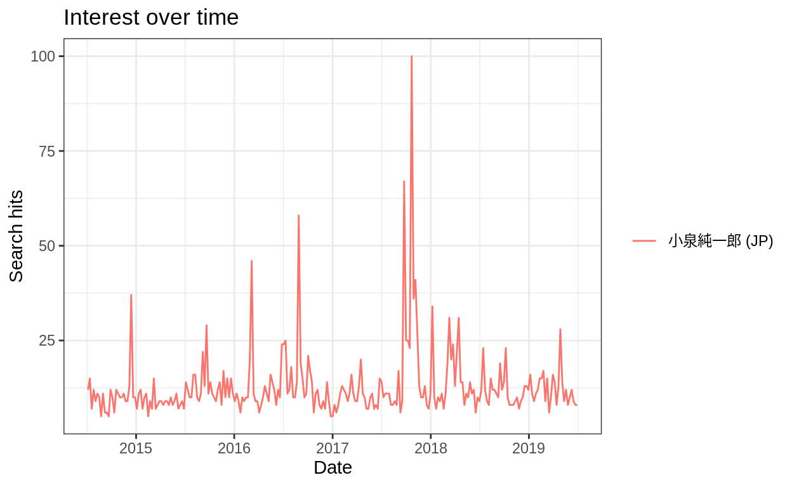
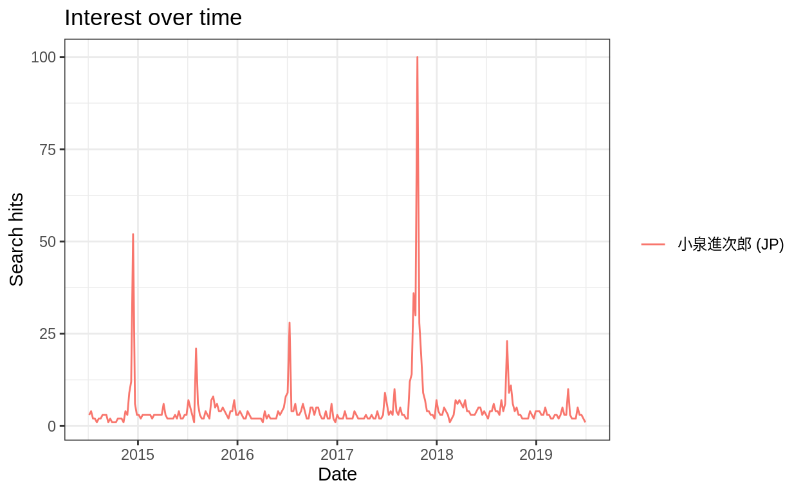
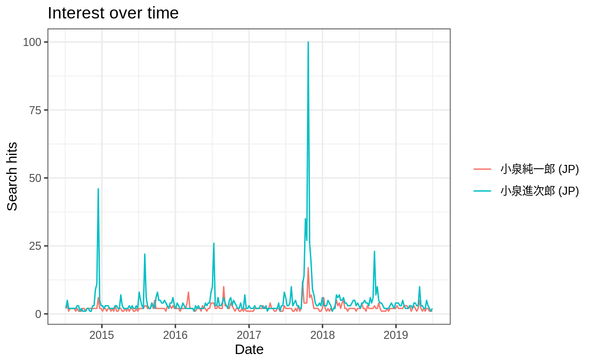
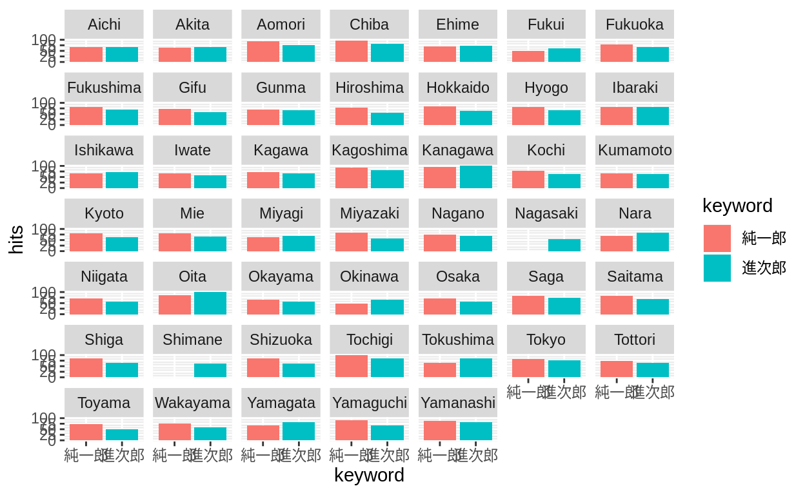
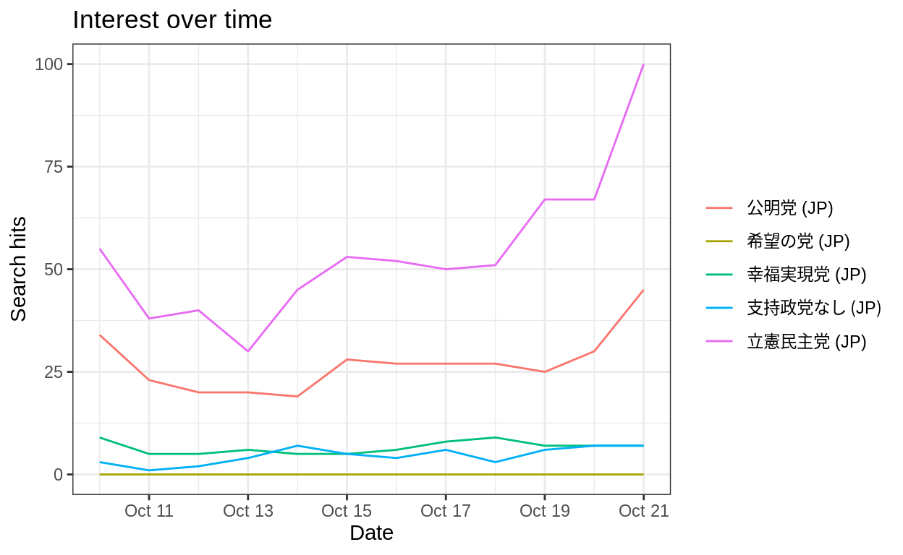
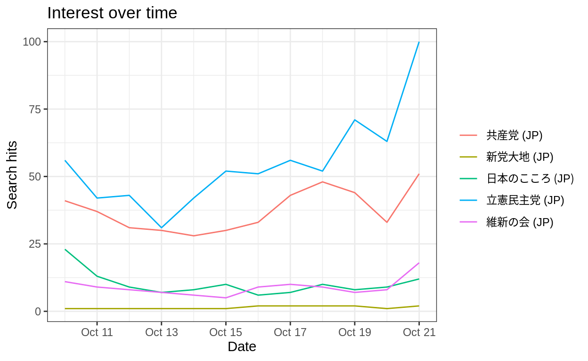
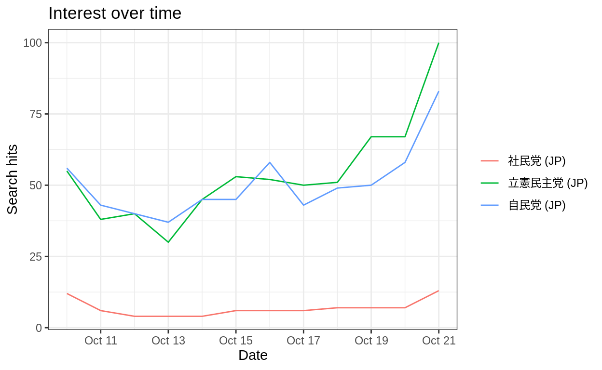
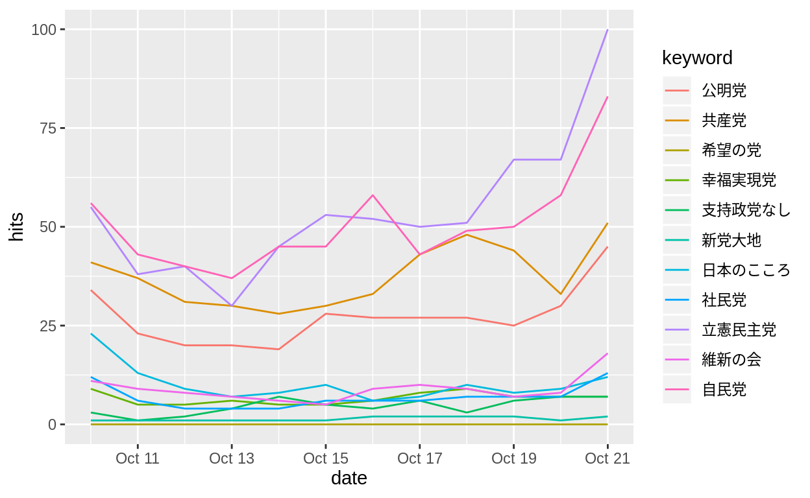
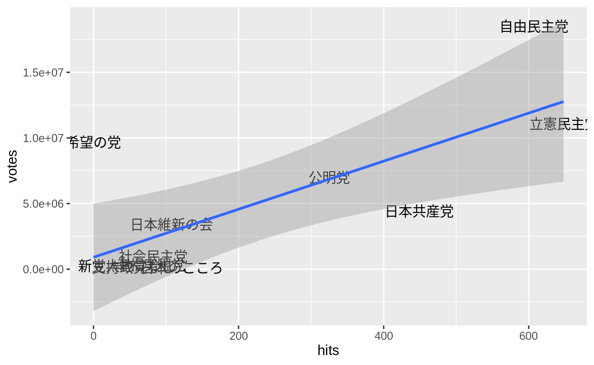
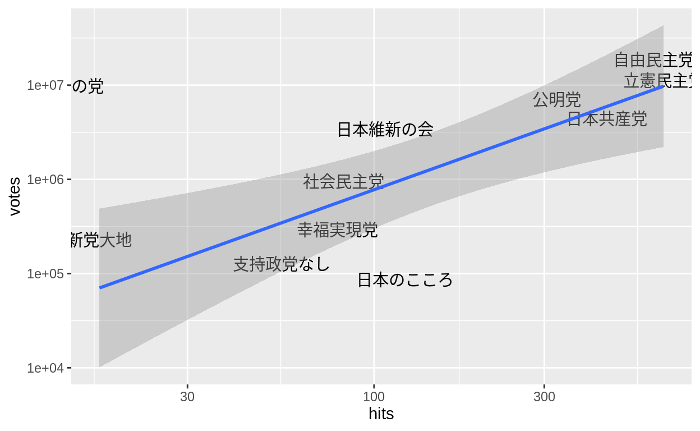

RでAPI経由でGoogleトレンドと検索ヒット数のクローリング&スクレイピングをする方法を説明します。
Googleで特定の単語がどれくらい検索されているのかはGoogleトレンドで調べることができます。
そして、「google trends R」のように検索するとGoogleトレンドのAPIをRから叩けるパッケージがあることが分かりますので、それを使ってみます。
library(tidyverse)
── Attaching packages ─────────────────────────────────────────────────────────────── tidyverse 1.2.1 ──
✔ ggplot2 3.2.0 ✔ purrr 0.3.2
✔ tibble 2.1.3 ✔ dplyr 0.8.1
✔ tidyr 0.8.3 ✔ stringr 1.4.0
✔ readr 1.3.1 ✔ forcats 0.4.0
── Conflicts ────────────────────────────────────────────────────────────────── tidyverse_conflicts() ──
✖ dplyr::filter() masks stats::filter()
✖ dplyr::lag() masks stats::lag()
library(rvest)
Loading required package: xml2
Attaching package: 'rvest'
The following object is masked from 'package:purrr':
pluck
The following object is masked from 'package:readr':
guess_encoding
library(gtrendsR)
library(rmarkdown)gtrends()という関数で検索スコアを取ってくることができます。 ここでは、小泉純一郎と小泉進次郎の検索トレンドを調べてみます。
trend <- gtrends(keyword = "小泉純一郎", geo = "JP")
plot(trend)
trend <- gtrends(keyword = "小泉進次郎", geo = "JP")
plot(trend)
しかし、このままでは小泉純一郎と小泉進次郎のそれぞれのピークで100となってしまうので、両者の比較をすることはできません。 そこで、両者を同時に調べてみます。
trend <- gtrends(keyword = c("小泉純一郎", "小泉進次郎"), geo = "JP")
plot(trend)
息子のほうが注目されていることがわかります。
gtrendsの出力の中身を見てみましょう。
str(trend, max.level = 1)
List of 7
$ interest_over_time :'data.frame': 522 obs. of 7 variables:
$ interest_by_country: NULL
$ interest_by_region :'data.frame': 94 obs. of 5 variables:
$ interest_by_dma : NULL
$ interest_by_city :'data.frame': 71 obs. of 5 variables:
$ related_topics : NULL
$ related_queries :'data.frame': 100 obs. of 6 variables:
..- attr(*, "reshapeLong")=List of 4
- attr(*, "class")= chr [1:2] "gtrends" "list"時系列以外にも地域別のスコアがあるのが分かります。
trend$interest_by_region %>%
paged_table()グラフにすることもできます。
trend$interest_by_region %>%
mutate(location = str_remove(location, " Prefecture"),
keyword = str_remove(keyword, "小泉")) %>%
arrange(location) %>%
ggplot() +
geom_bar(aes(x = keyword, y = hits, fill = keyword), stat = "identity") +
facet_wrap(~location)
Warning: Removed 2 rows containing missing values (position_stack).
関連検索ワードもあることがわかります。
trend$related_queries %>%
paged_table()related_queriesにはtopとrisingがあります。Yahoo!による2017年衆議院議員選挙の予測をGoodleのデータで再現してみます。
まず、2017年の衆議院議員選挙の結果は高知工科大学の矢内先生のウェブページで公開されているのでお借りします。 比例ブロックごとに結果があるので、政党ごとに集計します。
data <- read_csv("http://yukiyanai.github.io/jp/resources/data/hr2017_pr_parties.csv") %>%
group_by(party) %>%
summarise(votes = sum(votes))
Parsed with column specification:
cols(
block = col_character(),
party = col_character(),
n_cand = col_double(),
pr_wins = col_double(),
smd_wins = col_double(),
votes = col_double(),
vshare = col_double()
)
paged_table(data)検索ワードは一度に5つまでしか指定することができないので、最も注目度の高い単語を毎回入れることで調整します。 今回はYahoo!の結果から立憲民主党が最も注目されてるようなので、立憲民主党をベースラインにします。
timeで公示日から投票日前日までの検索期間を指定します。
trend1 <- gtrends(keyword = c("公明党", "希望の党", "幸福実現党", "支持政党なし", "立憲民主党"), geo = "JP",
time = "2017-10-10 2017-10-21")
plot(trend1)
trend2 <- gtrends(keyword = c("新党大地", "日本のこころ", "共産党", "維新の会", "立憲民主党"), geo = "JP",
time = "2017-10-10 2017-10-21")
plot(trend2)
trend3 <- gtrends(keyword = c("社民党", "自民党", "立憲民主党"), geo = "JP",
time = "2017-10-10 2017-10-21")
plot(trend3)
無事、立憲民主党が一番注目されていることが確認できたので、これらを結合し、立憲民主党の重複を除外します。
trend <- bind_rows(trend1$interest_over_time,
trend2$interest_over_time %>%
filter(keyword != "立憲民主党"),
trend3$interest_over_time %>%
filter(keyword != "立憲民主党"))エラーが出ましたが、これはhitsには1<という場合があるので文字列になっているためです。 なので、数字をパースしておきます。
trend <- bind_rows(trend1$interest_over_time %>%
mutate(hits = parse_number(hits)),
trend2$interest_over_time %>%
filter(keyword != "立憲民主党") %>%
mutate(hits = parse_number(hits)),
trend3$interest_over_time %>%
filter(keyword != "立憲民主党"))
Error in parse_vector(x, col_number(), na = na, locale = locale, trim_ws = trim_ws): is.character(x) is not TRUE時系列プロットができました。
trend %>%
ggplot() +
geom_line(aes(x = date, y = hits, colour = keyword))
これを政党ごとに集計し、選挙結果と政党名を揃えます。
trend <- trend %>%
group_by(keyword) %>%
summarise(hits = sum(hits)) %>%
mutate(party = keyword %>%
recode("共産党" = "日本共産党",
"社民党" = "社会民主党",
"維新の会" = "日本維新の会",
"自民党" = "自由民主党"))
paged_table(trend)選挙結果のデータと結合し、散布図を作成します。
left_join(data, trend, by = "party") %>%
ggplot() +
geom_text(aes(x = hits, y = votes, label = party)) +
geom_smooth(aes(x = hits, y = votes), method = "lm")
Yahoo!の結果と比べると自民党と希望の党の位置がちょっと違いますが、わりかし近いのではないでしょうか。
ちなみに、両軸の対数を取るとこんな感じです。
left_join(data, trend, by = "party") %>%
ggplot() +
geom_text(aes(x = hits, y = votes, label = party)) +
geom_smooth(aes(x = hits, y = votes), method = "lm") +
scale_x_log10() +
scale_y_log10()
Warning: Transformation introduced infinite values in continuous x-axis
Warning: Transformation introduced infinite values in continuous x-axis
Warning: Removed 1 rows containing non-finite values (stat_smooth).
(2019年7月3日追記)ある単語でGoogle検索したときにいくつのウェブサイトにヒットするか知りたいかもしれません。 このような場合は、検索パラメータをいじって検索します。
具体的には、XXXXという単語を検索したい場合はhttps://www.google.co.jp/search?q=XXXXとすればいいことが分かります。 そこで、今回は新海誠と秒速5センチメートルで検索してみようと思います。
html <- html_session("https://www.google.co.jp/search?q=新海誠+秒速5センチメートル",
httr::user_agent("Mozilla/5.0 (X11; Ubuntu; Linux x86_64; rv:67.0) Gecko/20100101 Firefox/67.0 "))+で繋げます。httr::user_agent()の中に文字列として入力します。検索ヒット数はidがresultStatsのタグの中にあることが分かるので、数字をパースします。
hits <- html %>%
html_node("div#resultStats") %>%
html_text() %>%
parse_number()
hits
[1] 743000